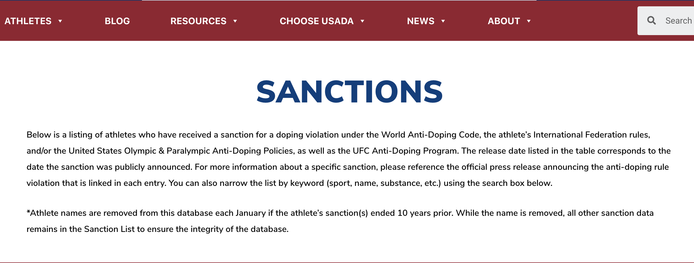

Mark Berman recently tweeted his interview with Ginny Finch, 2016 USA Olympic Boxing team member:
USADA told Houston Olympic boxer @GinnyFuchsUSA,who tested positive for prohibited substance,was determined to have been ingested by her(unprotected sex)without fault or negligence&won’t face ineligibility.USA Boxing told Fuchs the USADA sanction of”No Fault”is the proper outcome pic.twitter.com/ez0gkS7fah
— Mark Berman (@MarkBermanFox26) June 11, 2020
According to insidehook, Fuch tested positive for Letrozole and GW501516, two drugs listed as “Hormone and Metabolic Modulators” on the World Anti-Doping Agency (WADA) Prohibited List.
How many postive tests without negative consequences?
In post on their website, USADA determined Fuch was not at fault, and would not face any time of ineligibility:
USADA determined that Fuchs’ male partner was using therapeutic doses of letrozole and GW1516 and the low amounts of letrozole metabolite and GW1516 metabolites detected in her sample were consistent with recent exposure to the substances via sexual transmission. Additionally, a WADA-accredited laboratory confirmed that products possessed by Fuchs’ partner contained therapeutic amounts of letrozole and GW1516.
Fuch’s case got me wondering how many athletes have had positive test results and had their athletic careers continue uninterrupted. I decided I would download the USADA data see for myself.
The data
The USADA sanction data is available on the USADA website.

It’s a searchable database in the browser, but I want to download this into R so I can wrangle and visualize it.
In order to extract data from the website, I’ll be using the rvest package written by Hadley Wickham to scrape the html code. The code chunk below loads the packages needed to reproduce the graphics.
library(tidyverse)
library(rvest)
library(xml2)Scraping the USADA website
The website for these data is available here. The rvest::read_html() and rvest::html_nodes() functions extract the content from the table in the Web page and translates it from HTML into a data frame.
USADA_url <- "https://www.usada.org/testing/results/sanctions/"
USADA_extraction <- USADA_url %>%
xml2::read_html() %>%
rvest::html_nodes("table")Store and explore* refers to storing an output of a call to an object, then checking the contents of that new object. This is a great way to get to know R, objet-oriented programming, and how functions work together in packages.
Check the structure of the extraction
Look at the structure of USADA_extraction.
# check the structure of the new USADA_extraction object
USADA_extraction %>% utils::str()## List of 1
## $ :List of 2
## ..$ node:<externalptr>
## ..$ doc :<externalptr>
## ..- attr(*, "class")= chr "xml_node"
## - attr(*, "class")= chr "xml_nodeset"This contains a node and a doc in a List.
Check the class of the extraction
If I check the class of the list we extracted, we find…
USADA_extraction %>% class()## [1] "xml_nodeset"…this is an xml_nodeset with 2 lists (stored within the 1 list). After a little bit of exploration, I find the table id in the html_node.
USADA_extraction[[1]]## {html_node}
## <table id="tablepress-1" class="tablepress tablepress-id-1">
## [1] <thead><tr class="row-1 odd">\n<th class="column-1">Athlete</th>\n<th cla ...
## [2] <tbody class="row-hover">\n<tr class="row-2 even">\n<td class="column-1"> ...Now I know the data I want from this object is in position [[1]] of this list.
I can subset the USADA_extraction list with the rvest::html_table() function and store the table contents in the UsadaRaw object. I check my work using the dplyr::glimpse(70).
UsadaRaw <- rvest::html_table(USADA_extraction[[1]])
UsadaRaw %>% dplyr::glimpse(70)## Rows: 766
## Columns: 5
## $ Athlete <chr> "Fuchs, Virginia", "Nickles, Madilyn",…
## $ Sport <chr> "Boxing", "Softball", "Weightlifting",…
## $ `Substance/Reason` <chr> "Letrozole; GW1516", "LGD-4033", "Non-…
## $ `Sanction Terms` <chr> "No Fault or Negligence", "No Fault or…
## $ `Sanction Announced` <chr> "06/11/2020", "06/11/2020", "06/09/202…why
dplyr::glimpse(70)? It prints less to the screen and keeps the col width to <80, which is nice for working in plain text.
This reveals a data frame with 766 observations. The contents from the HTML list (USADA_extraction) has been converted to a data frame (UsadaRaw). I’m going to store this data frame as a .csv in a data/raw folder (so I don’t have to scrape it every time I run this script).
# create raw data path
fs::dir_create("data/raw/")
# export the .csv file
write_csv(as.data.frame(UsadaRaw),
base::paste0("data/raw/",
base::noquote(lubridate::today()),
"-UsadaRaw.csv"))
# check
fs::dir_tree("data/raw")## data/raw
## └── 2020-06-13-UsadaRaw.csvWe will start wrangling the doping data for visualizations in the next posting.